（記者旁白）大學生活是一個漸漸從學生身分步入職場的重要階段，許多同學對於自己將來要做什麼不是很清楚，對就讀科系的出路也有許多疑惑。在這個成長階段也常遇到家庭、人際、情感與生涯部分的問題。令人擔憂的是有的人遇到問題時往往會選擇逃避，然而問題積壓久了累積越多也會變得更加嚴重，我們要如何判斷自己的壓力已經過大了呢？
蘇真以老師：如果這個問題放在心裡面只要一想到就會頭痛失眠睡不著，腸胃問題發生，越來越沒有想要動的活力，那你就要注意了，這個壓力已經超出你可以負荷的重量。
適當舒壓 尋求諮詢管道
（記者旁白）當心裡的問題沒有處理好，可能連帶產生很多生理上的問題，譬如說吃不好睡不好，當有這樣的問題出現時，就應該要開始關注問題本身並解決他。而平常生活中的壓力無所不在，會成為助力或是阻力，關鍵就在於適當的舒壓，不僅僅是透過運動的方式能夠有效舒壓，也可以花些時間從事自己喜歡的休閒活動。此外，無論是學校或社會上，在我們身邊也有不少可以尋求協助與諮詢的管道。
蘇真以老師：我們都歡迎大專院校的學生，善用每個學校裡都有設置的諮商輔導單位，這裡都有專業的諮商心理師、社工師、臨床心理師跟醫師，他們可以幫助這些各大專院校的學生，即早發現問題即早解決問題，步入社會的時候，他們會非常有能量可以成為這個社會有用的人。
關心身旁親友 及早發現問題
（記者旁白）當你身邊的朋友這陣子突然和平常有很大的不同，眼神像失了魂，做事情也沒有動力，甚至在談話中有意無意的會說出類似活著也沒有意義的話，這時候你就要查覺到異狀，主動關心他。朝陽也設有學生發展中心，無論關於人際、生涯、情感、家庭方面等的生活困擾，都歡迎學生前來尋求協助。
記者 彭郁珵、許喨瑜、李宜庭 台中報導